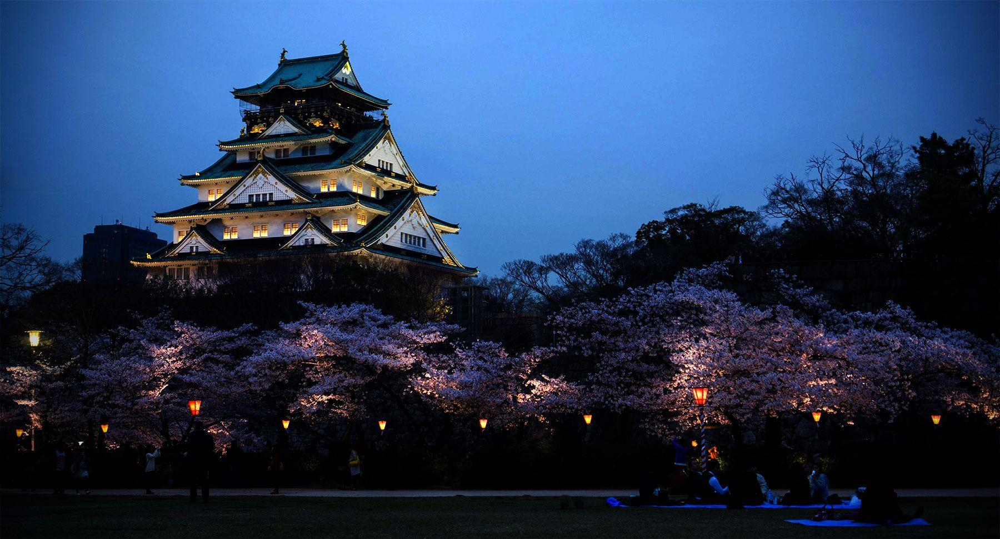
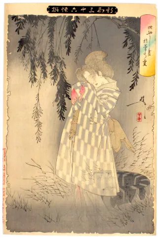
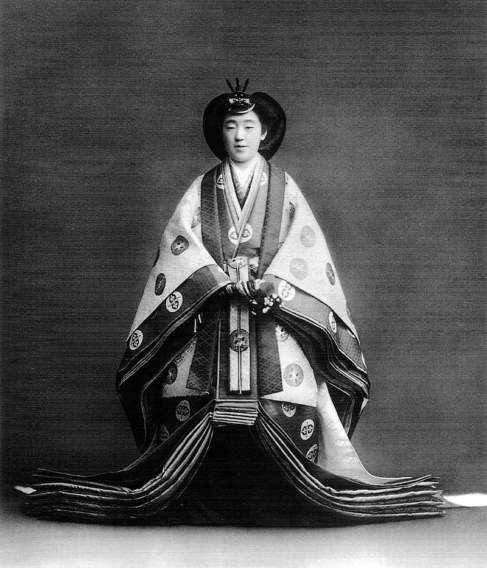

| |
Haunted Places | Paranormal Activities | Exorcisms & Possessions | Social Platforms | Horror Movies | Common Signs | Contact Us |
|---|
Himeji CastleHimeji, Hyogo, Japan |
Himeji Castle (姫路城) in Japan is widely known for its grandeur and beauty and one of the countries most recognizable landmark, and a perfect place to watch the cherry blossoms in the spring.
Himeji Castle may also be known as one of the nation’s most haunted places. Mysterious fog, strange shadows, and eerie sounds have been reported by many who have visited this iconic fortress and legend has it that ghosts appear often here.

The History of Himeji Castle
Himeji Castle in the Hyōgo Prefecture was first built in 1333 by Akamatsu Norimura as a fort on top of the hill, however a more grand version of the castle was created by Toyota Hideyoshi in 1581 and is today Japan’s largest castle.
Over time, the Himeji Castle has undergone many renovations and changes to become the majestic structure it stands as today with 83 rooms and has stood almost intact even after wars like the bombing of Himeji in WW2 og natural disasters like the Great Hanshin Earthquake in 1995.
The Himeji Castle is known as Hakuro-jō or Shirasagi-jō, meaning the White Heron Castle because of the white color and architecture meant to look like a bird taking flight.
The roof tiles of the main tower of Himeji Castle is filled with traditional Kawara ceramic tiles that according to local lore hold mystical powers. The tiles are decorated by Onigawaras, ocra shaped tiles witting at the end of the ridges. These creatures are said to repel evil spirits and protect the castle. Question is, have they really repelled all evil spirits inside?
Many theories point to a long history of secrets and tragedies throughout its lifetime, leading some to believe that it is home to the restless spirits of the past that even the magic tiles are unable to repel.
Ghost Stories in Japan
Legends have been surrounding the maze-like construction of Himeji Castle ever since it was built, often told in summer during the Japanese holiday Obon where they celebrate the spirit of the dead. One of the most famous stories about this castle tells of a “White Lady” who appears on a moonlit night, wearing white kimono as if she were a bride.
This is linked to one of the most famous ghost stories in Japan called Banshū Sarayashiki (播州皿屋敷), or The Dish Mansion in Harima Province that have a version of it set to Himeji Castle. A famous Kabuki play that was put on the big stages to bring out fear in the hot summer months when ghost stories theatre was all the rage.
Okiku was a servant that was falsely accused of losing one of the ten valuable plates of her lord’s family. The Samurai master she worked for was angry at her for rejecting him and he hid away the plates to trick her into becoming his lover. She refused again, even if he said he would overlook her mistake of losing one of his valuable plates.
Enraged, he threw her down a well where she died. In some version, she threw herself down the well to escape the torment from her master. In either cases, she died in that well. Perhaps quickly, hitting the stone walls, perhaps slowly, drowning in the dark water.
It is said she became an onryō, a vengeful spirit, back for revenge of those who wronged her. The ghost of Okiku tormented her murderer every night, rising from the well and coming up to the mansion again, making him go insane in the end. Okiku was still counting the nine plates, one by one. Only reaching nine everytime, then making a terrible shriek when she again missed the tenth plate.

The Haunted Okiku Well
Even though the play is set on several castles, there is but one well that claims to be Okiku’s well that are still haunted and most likely the inspiration of Sadako Yamamura coming out from the well in all white with her dark long hair.
Today there is a well that you can find on the castle of Himeji Castle grounds they say is from the ghost story of Banshū Sarayashiki. And people have reported about spotting poor Okiku as she rises from the well to count her plates.
The Castle Monster of Himeji Castle
Although there is no hard evidence to prove that this mystical tale is true, the Himeji Castle still evokes a sense of mystery with its hidden passages and dark courtyards. Other supernatural legends often tell of mysterious lights in the night sky, strange noises echoing through the castle’s corridors, or ghostly figures watching over visitors from atop the castle walls.
These stories paint an eerie picture of the enigmatic Haunted Himeji Castle, making it one of Japan’s most intriguing tourist spots for those interested in ghosts and legends.
One of these mysterious creatures thought to dwell inside of the castle walls is a mixture of Japanese folklore and modern ghost stories. This is the tale of what is know known as the Castle Monster, or the Legend of Osakabehime.
The Legend of Osakabehime
The story of Osakabehime (刑部姫) is set at Himeji Castle. Osakabehime is a figure in Japanese folklore as yōkai, a class of supernatural entities and spirits. According to this legend she lives in the castle tower and only shows up once a year to the lord of the castle to tell him about the fate of the castle.
Osakabehime is said to hate people and hides away in the castle corners and is thought to be an old kitsune. She is also said to be an illegitimate child of Princess Inoe (717-775) the empress consort of Emperor Konin of Japan who was deposed in 772 after she was accused of witchcraft. There are also theories that she is the spirit of the courtesans that Emperor Fushimi loved.
First, the figure of Osakabehime had no assigned gender and was in the earlier legends like in the Shokokuhyakumonogatari (諸国百物語) from 1677, she was just referred to as The Castle Monster.
Today Osakabehime is mostly considered to be a woman in her 30s, wearing a ceremonial twelve-layered kimono called The jūnihitoe (十二単) and can read human minds and control animals in many of her appearances in classic literature.
A Kabuki play is based on Osakabehime story and is considered as one of the Shin-Kabuki Jūhachiban, a set of eighteen of the best kabuki plays.

Haunted Stories and the Unexplained Phenomena at Himeji Castle
So, perhaps the Himeji Castle have something more than romantic cherry blossom images to give to visitors of this old castle. Some of the most prominent haunted stories connected to Himeji Castle include eerie noises such as groans and murmurs, mysterious figures appearing in photos, and sudden drops in temperature throughout certain parts of the castle. You know, classical haunted castle stuff.
Some visitors even swear that they have seen the spirit of Osakabehime gliding along the castle walls in her unmistakable attire, or they have heard the desperate counting of the servant Okiku as she is trying to find the last dish she is missing. Such unexplained phenomena continue to draw curious travelers every year to look for more than beautiful cherry blossoms falling.
Beyond The Veil |
||
|---|---|---|
|
Explore the unexplained and discover mysteries that challenge the ordinary. |
||
|
||
|
|